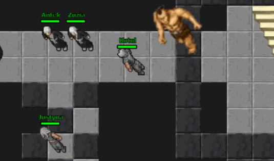
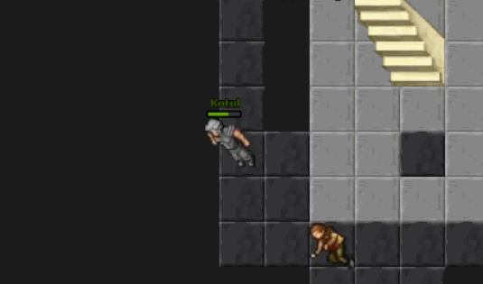

About Webions
Firstly, big five to PEONSO, cos i've get sprites from here
To play webions, in every case - go to
home page, and click "PLAY".
Then create simple acc and have fun!
Table of contents
Add Webions to your mobile home screen
Android
- Open Webions in Chrome
- Tap the menu icon (3 dots in upper right-hand corner)
- Tap "Add to homescreen
- You can type your own name of app and finally click "Add"
IOS
- Open Webions in Safari
- Tap the Share icon (the square with an arrow pointing out of it) at the bottom of the screen.
- Scroll down and tap "Add to Home Screen"
- You can type your own name of app and finally click "Add"
Computer controls
To play with your computer, you need few keys on your keyboard:
- T - is for white targeting
- S - is for red targeting
- H - is for healing
- D - is for distance shoting
- Arrows - are for move your character
In game events
White targeting
In case of attack somebody - firstly you must whiteTarget him, by klicking T button (mobile) or T key on keyboard (computer).  If in your area are few players, click T key multiple times to select right player or monster.
Red targeting
By clicking S key - you can change your white target into red target And only by redtarget you can hit your enemy by fist fighting (you must stand near him).
And only by redtarget you can hit your enemy by fist fighting (you must stand near him).
Distance shoting
D key is for distance shoting. Before you shot somebody - remember to red target him.
Healing
Your health is most important thing in Webions - to increase it - click H key.  If you click heal to quick once again - you will see grey dust - You are exhousted.Scripting
You can help your player grow by using scripts.
To use it open development tools (CTRL + SHIFT + J) or (F12)
Next, go to "Console" and use this scripts:
// Auto shot on target:
controls.update([68,true]);
// Turn off:
controls.update([68,false]);
// Auto healing:
controls.update([72,true]);
// Turn off:
controls.update([72,false]);